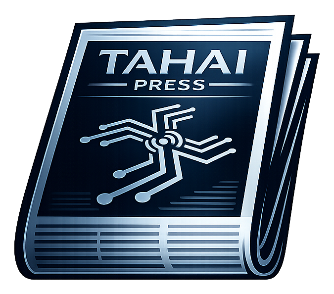

Formal reading experience
Newspaper-inspired hierarchy, drop caps, measured line lengths, accessible contrast, structured headings, resilient mobile layouts, and print-aware article pages make long-form reporting easier to read.
EST. 2026
INDEPENDENT SOFTWARE

TAHAI PressIndependent publishing, engineered for clarity.CREATED IN MAINE
FOR PUBLISHERS EVERYWHERE
The publisher-owned newsroom
TAHAI Press turns articles, public records, PDFs, and community reporting into a formal, fast, accessible publication without requiring a traditional database or proprietary newsroom.
DATABASE-FREEArticles remain portable files.
STATIC-FIRSTFast pages with a small attack surface.
EDITOR-FRIENDLYPublish in a browser without touching code.
OPEN SOURCEInspect, fork, improve, and keep it.
Apache 2.0 · Publisher freedom
TAHAI Press is released under the Apache License, Version 2.0. Redistributed source should retain the license and required notices, and material changes should be identified as the license requires.
No public-facing platform credit is required. Sites built with TAHAI Press do not need a “Powered by” banner, footer note, project logo, backlink, hidden link, or other visible TAHAI attribution. Publisher branding remains the publisher’s own.
Inside the press
Newspaper-inspired hierarchy, drop caps, measured line lengths, accessible contrast, structured headings, resilient mobile layouts, and print-aware article pages make long-form reporting easier to read.
Embed local PDFs, link external records, preserve direct-open and download alternatives, and publish the written context readers need to understand why a source document matters.
Git records every change. Validation blocks incomplete public articles. Tests verify generated routes. Release proof can record every deployment file and SHA-256 hash.
Import WordPress WXR, Markdown, JSON, CSV, individual PDFs, or mixed folders. Dry runs report collisions and preserve legacy paths before publishing.
Generate browser search, category and topic archives, contributor pages, coverage hubs, date archives, RSS, JSON Feed, sitemap, and social metadata at build time.
The included crossword desk offers seven Novice minis and multiple fifteen-by-fifteen Expert blocked grids, with local browser storage, keyboard controls, and no external service.
The production line
Editors work in Pages CMS. Content and media are committed to GitHub. TAHAI Press validates the record and builds plain static files. Cloudflare Pages publishes them globally. There is no application database to patch, no WordPress runtime to babysit, and no proprietary export standing between the publisher and the archive.
Deployment brief
Start from the public repository and keep the included README, license, CMS configuration, tests, and deployment workflows.
Replace the sample identity in content/site.json, add the publisher's own logo and social image, and review sample content.
Use Node 22, build command npm run build:cloudflare, and output directory dist.
Authorize the repository and give editors a browser-based workflow for stories, PDFs, contributors, hubs, categories, and publication settings.